Sistema de reclutamiento · Winit Kentucky Win.It America · 7050 New Buffington Rd, Florence, KY 41042
Gary RonquilloOnsite Representative Top Tier HR
Versión 1 · Octubre de 2026 · Uso interno
Contenido
Qué es y cómo funciona
Configuración inicial (primer día)
Rutina diaria y semanal
Dashboard (panel)
Today’s calls (llamadas de hoy)
Candidates (candidatos)
La ficha del candidato
Pipeline y etapas
Tasks (tareas automáticas)
Openings (vacantes)
90-day calendar (calendario)
Sources (fuentes)
Agencies (coordinación entre agencias)
Messages & ads (mensajes y anuncios)
Reports (reportes PDF y Excel)
QR & flyer kit
Registration mode (modo registro)
30-day plan
Settings & data (ajustes y datos)
Reglas de cumplimiento
Preguntas frecuentes y solución de problemas
Cómo leer este manualLa página está en inglés. Los nombres de botones y secciones aparecen tal como los ves en pantalla, así, con la traducción entre paréntesis la primera vez. El botón EN | ES arriba a la derecha cambia toda la página a español.
Capítulo 1
Qué es y cómo funciona
Una sola página web para todo el reclutamiento del sitio Winit Kentucky: candidatos, seguimiento diario, vacantes, coordinación con otras agencias y reportes para la compañía.
Dónde se abre
En https://claude.ai/artifact/Q2tz86VE9MeC4YNpZgmDgT, con tu sesión de claude.ai iniciada. Funciona en computadora, tableta y teléfono. Guárdala en favoritos.
Dónde se guardan los datos
Los candidatos, tareas, vacantes, actividades y ajustes se guardan en un espacio privado de la página: solo tú los ves, aunque compartas la página con tu supervisor u otras personas.
Se guardan solos al pulsar cada botón de guardar. No hay que “subir” nada.
Lo que ves en un dispositivo aparece en los demás donde abras la página con tu misma cuenta.
Qué hace sola y qué haces tú
La página lo hace automáticamente
Lo haces tú
Crea tareas de seguimiento según la etapa de cada candidato
Llamar y enviar mensajes desde tu teléfono o correo de trabajo
Marca posibles duplicados (mismo teléfono, correo o nombre + código postal)
Decidir si un candidato avanza de etapa
Arma la lista de llamadas del día en orden de prioridad
Confirmar vacantes, pagos y horarios con tu supervisor
Calcula indicadores, embudo, conversión por fuente y alertas
Publicar anuncios desde las cuentas autorizadas
Genera reportes PDF/Excel, QR, folletos y tarjetas
Revisar y enviar los reportes
ImportanteLa página no envía mensajes, no publica en redes y no hace llamadas por sí sola. Prepara el texto y te muestra el número; el envío siempre es tuyo y solo a personas que dieron su consentimiento.
Capítulo 2
Configuración inicial (primer día)
Abre Settings & data (ajustes y datos). Revisa tu nombre (ya dice Gary Ronquillo), escribe tu teléfono de trabajo y el enlace de preinscripción (por ejemplo, un Formulario de Google o Microsoft que pida solo nombre, teléfono, turnos, experiencia y consentimiento). Pulsa Save settings.
Ajusta las metas de actividad (contactos por día, preseleccionados y entrevistas por semana, asistencia al primer día, retención a 30 días). Son metas de trabajo, no promesas de contratación.
Abre 30-day plan y lleva las 15 preguntas a tu supervisor. Anota cada respuesta y quién la dio.
En Openings (vacantes) registra las vacantes que el cliente y Top Tier HR autorizaron.
En 90-day calendar pulsa Load suggested 90-day plan para cargar 39 actividades sugeridas (todas sin confirmar).
En Agencies registra las agencias del sitio y tu primera reunión de coordinación.
En QR & flyer kit descarga el folleto y las tarjetas; prueba el QR con tu teléfono antes de imprimir.
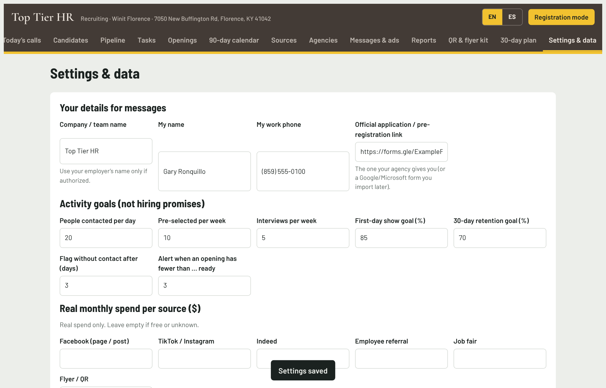
Settings & data: tus datos para mensajes, folletos y reportes.
Para practicarCon la base vacía, el panel ofrece Load sample data: carga 22 candidatos ficticios llamados “Sample …” con teléfonos 555-01xx. Todo queda marcado como ejemplo. Quítalos con Remove sample data antes de trabajar con datos reales o de enviar un reporte.
Capítulo 3
Rutina diaria y semanal
Momento
Qué hacer
Sección
Al llegar (10 min)
Revisar registros nuevos, tareas de hoy, seguimientos vencidos y alertas de pocos candidatos
Dashboard
Mañana
Trabajar la lista de llamadas de arriba hacia abajo; marcar Contestó / No contestó
Today’s calls
Mañana
Preseleccionar a los interesados contra los requisitos reales de la vacante
Pipeline / ficha
Mediodía
Confirmar citas y primeros días de mañana
Today’s calls / Tasks
Tarde
Una acción de captación: publicación aprobada, llamada a una organización, visita
Calendar / Messages / Kit
Cierre (5 min)
Escribir comentarios del día y descargar o copiar el reporte diario
Reports
Semanal
Reunión de coordinación entre agencias (copiar la agenda), reporte semanal en PDF
Agencies / Reports
Mensual
Reporte mensual en PDF con 3 recomendaciones; revisar inactivos de más de 12 meses
Reports / Settings
Capítulo 4
Dashboard (panel)
Resumen de todo el reclutamiento. Arriba a la derecha eliges el período: hoy, 7, 30 o 90 días.
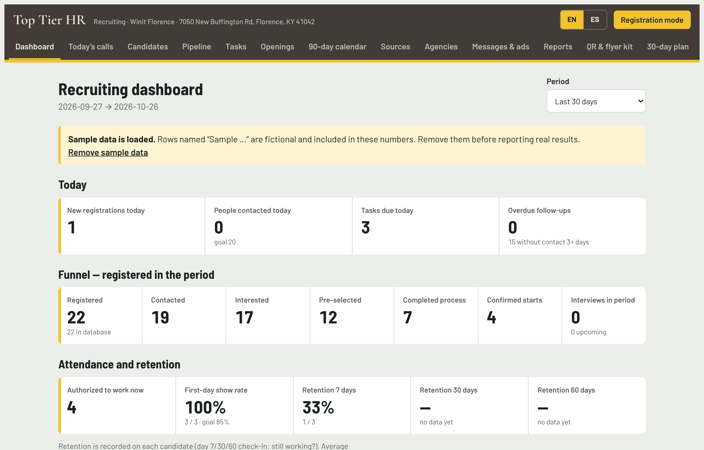
Bloques “Today” y embudo del período.
Bloque
Qué significa
Today
Registros nuevos hoy, personas contactadas hoy (contra tu meta), tareas de hoy y seguimientos vencidos, más cuántos candidatos llevan días sin contacto.
Low candidate pool (alerta roja)
Una vacante autorizada tiene menos candidatos listos que el mínimo que fijaste o que los puestos que faltan.
Funnel
De las personas registradas en el período, cuántas llegaron alguna vez a cada etapa. Cerrar a alguien no borra hasta dónde llegó.
Attendance and retention
Autorizados para trabajar hoy, asistencia al primer día, y retención a 7/30/60 días según lo que marques en cada ficha.
Candidates and conversion by source
Por fuente: registrados → contactados → preseleccionados → aprobados → iniciaron. Conversión = iniciaron ÷ registrados. El costo aparece solo si registras un gasto mensual real.
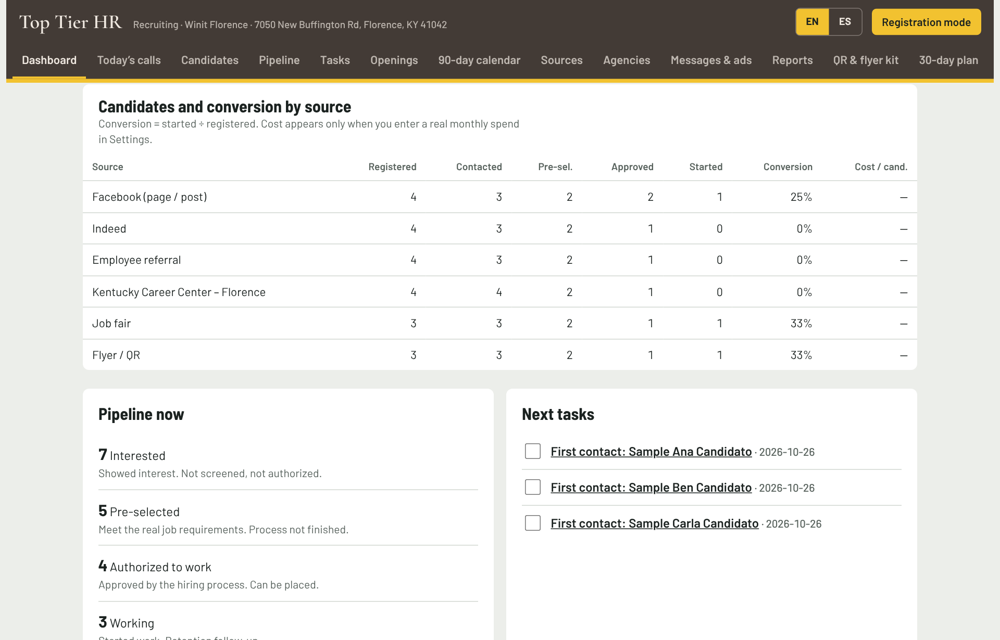
Asistencia, retención y conversión por fuente.
Capítulo 5
Today’s calls (llamadas de hoy)
Tu lista de trabajo del día. Cada persona aparece una sola vez, con el motivo más urgente.
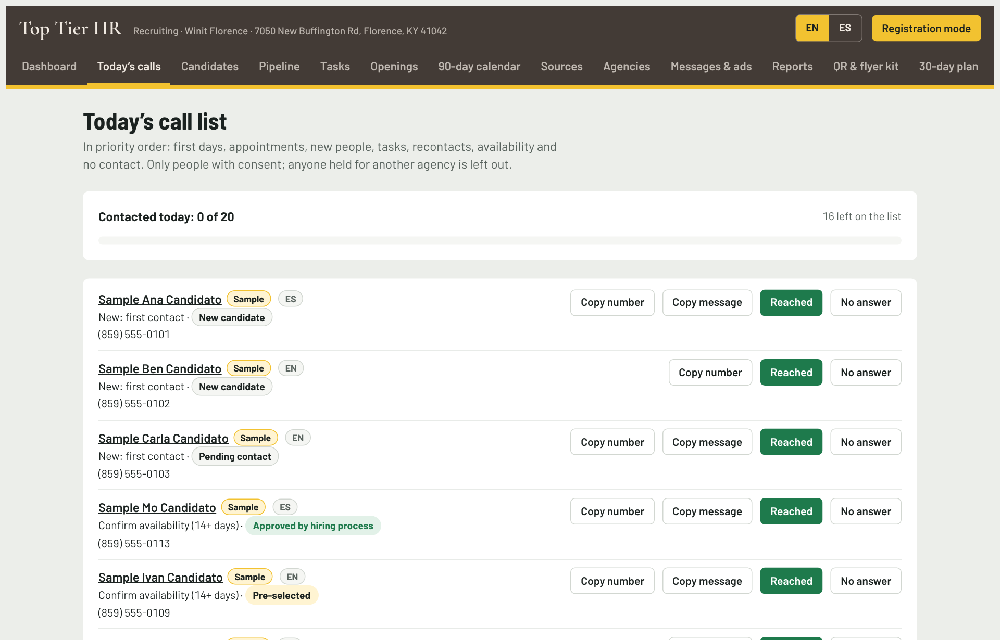
La barra muestra cuántas personas has contactado hoy contra tu meta.
Orden de prioridad
Primer día mañana (confirmar) o primer día hoy (¿se presentó?)
Cita mañana (recordatorio)
Registros nuevos sin ningún contacto
Tareas vencidas o de hoy
Personas que pidieron recontacto
Preseleccionados o aprobados sin contacto en 14 días (confirmar disponibilidad)
Candidatos sin contacto en los días que fijaste
Botones de cada fila
Copy number copia el teléfono para marcar.
Copy message copia el mensaje adecuado en el idioma del candidato (solo si aceptó mensajes escritos).
Reached (contestó) registra la llamada, mueve a “Contacted” a los nuevos y cierra sus tareas del día.
No answer (no contestó) registra el intento; la persona sigue en tus pendientes.
No aparecen personas sin consentimiento ni personas retenidas porque otra agencia las colocó en el sitio.
Capítulo 6
Candidates (candidatos)
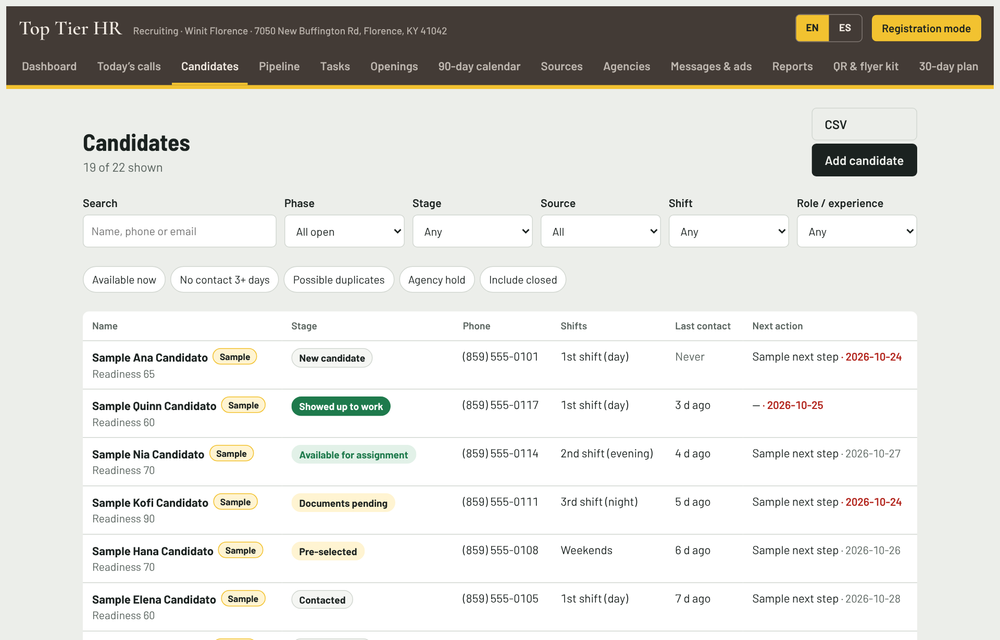
Lista con búsqueda, filtros y etiquetas.
Buscar y filtrar
Search: nombre, teléfono (3+ dígitos) o correo.
Phase / Stage: fase (interesados, preseleccionados, autorizados, trabajando) o etapa exacta. Por defecto se ocultan los cerrados.
Source, Shift, Role / experience: fuente, turno disponible y puesto o experiencia.
Botones rápidos: Available now, No contact 3+ days, Possible duplicates, Agency hold, Include closed.
Etiquetas
Etiqueta
Qué hacer
Possible duplicate
Abre los dos registros, conserva uno y elimina el otro, o pulsa Not a duplicate.
Agency hold
La persona dice que otra agencia la colocó aquí. No la proceses; escala al supervisor.
Readiness (0–100)
Ayuda a ordenar llamadas: disponibilidad, turnos, experiencia en el puesto, equipos y contacto reciente. No decide contrataciones.
Agregar un candidato
Pulsa Add candidate. Obligatorio: nombre, apellido y teléfono o correo. Marca el consentimiento y por qué canales (texto, WhatsApp, correo). Exporta la lista con CSV.
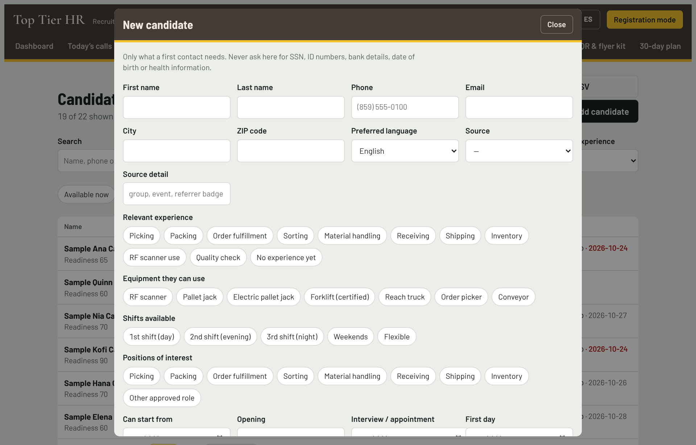
Formulario de nuevo candidato: solo datos para un primer contacto.
Nunca registresNúmero de Seguro Social, identificaciones, datos bancarios, fecha de nacimiento, salud, estatus migratorio, religión ni otros datos personales. Las observaciones son solo laborales.
Capítulo 7
La ficha del candidato
Haz clic en cualquier nombre para abrirla. Todo lo que pasa con esa persona está aquí.
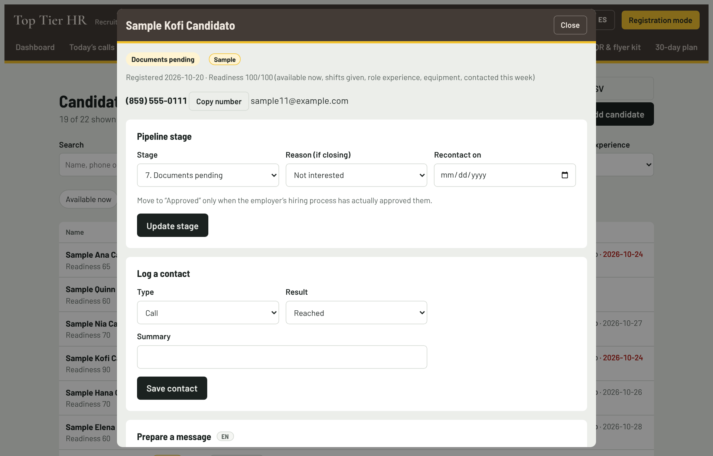
Etapa del proceso y registro de contactos.
Pipeline stage: elige la nueva etapa y pulsa Update stage. Al cerrar, elige el motivo y, si la persona lo pide, una fecha de recontacto (se crea la tarea).
Retention (aparece cuando ya trabaja): marca a los 7, 30 y 60 días si sigue trabajando. Alimenta los indicadores de retención.
Log a contact: tipo (llamada, texto, WhatsApp, correo, en persona, nota), resultado y resumen breve.
Prepare a message: elige la plantilla; sale en el idioma del candidato con su nombre, el tuyo y tu teléfono. Si falta algo (fecha, hora, lugar) la página lo avisa. Copy message, envíalo tú y pulsa Log as sent.
Tasks: tareas de esta persona; márcalas al terminar.
Profile: datos, experiencia, equipos, turnos, puestos, disponibilidad, vacante, cita, primer día, próxima acción, consentimiento y verificación de otra agencia.
History: todos los contactos y cambios de etapa con fecha y hora.
Delete: para duplicados o cuando la persona pide que la eliminen. Pide confirmación y no se puede deshacer.
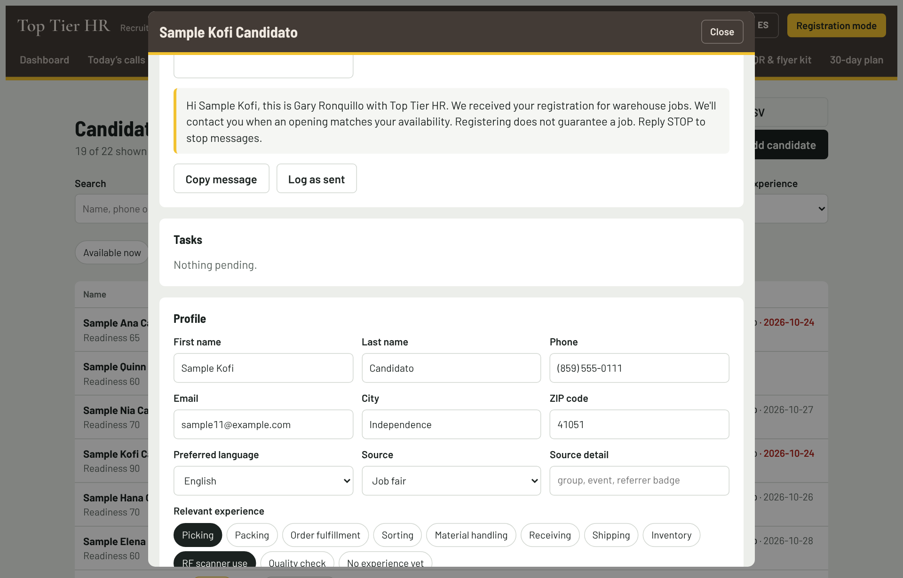
Mensaje preparado en el idioma del candidato, con tu nombre y empresa.
Capítulo 8
Pipeline y etapas
Tablero con las 15 etapas agrupadas en fases. Cambia la etapa desde el selector de cada tarjeta. Las tarjetas se ordenan por preparación.
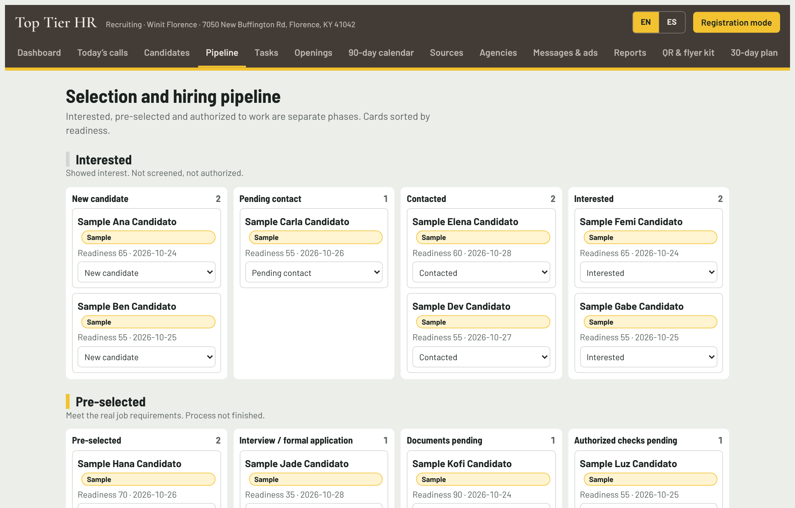
Interesado, preseleccionado y autorizado para trabajar son fases distintas.
#
Etapa
Fase
Cuándo usarla
1
New candidate
Interesado
Recién registrado
2
Pending contact
Interesado
Revisado, falta contactar
3
Contacted
Interesado
Ya hablaste con la persona
4
Interested
Interesado
Confirma interés
5
Pre-selected
Preseleccionado
Cumple los requisitos reales de la vacante
6
Interview / formal application
Preseleccionado
En el proceso oficial de Top Tier HR
7
Documents pending
Preseleccionado
Papeles de incorporación pendientes
8
Authorized checks pending
Preseleccionado
Verificaciones permitidas por la política
9
Approved by hiring process
Autorizado
Solo cuando el proceso realmente lo aprobó
10
Available for assignment
Autorizado
Esperando colocación
11
Assigned to a shift
Autorizado
Tiene turno y fecha de inicio
12
First day confirmed
Autorizado
La persona confirmó su primer día
13
Showed up to work
Trabajando
Se presentó el primer día
14
Retention follow-up
Trabajando
En seguimiento
—
Closed
Cerrado
No interesado, no disponible, recontactar, no se presentó, etc. (motivo obligatorio)
Capítulo 9
Tasks (tareas automáticas)
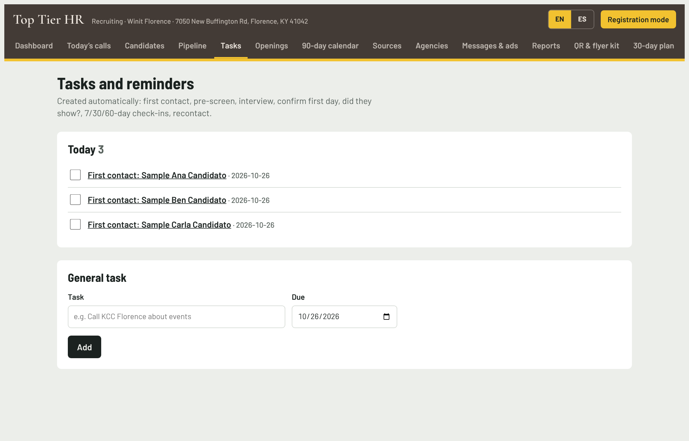
Agrupadas en vencidas, hoy, próximos 7 días y más adelante.
Cuando pasa esto…
…se crea esta tarea
Se registra un candidato
Primer contacto (hoy)
Pasa a “Interested”
Preselección contra la vacante (mañana)
Se pone fecha de cita
Entrevista (el día de la cita)
Asignado o primer día confirmado, con fecha
Confirmar primer día (día anterior) y “¿se presentó?” (ese día)
Se presentó a trabajar
Seguimiento a los 7, 30 y 60 días
Se cierra con fecha de recontacto
Recontactar (en esa fecha)
Las tareas de etapas anteriores se cierran solas cuando el candidato avanza. Abajo puedes agregar tareas generales (por ejemplo, “Llamar al KCC Florence”).
Capítulo 10
Openings (vacantes)
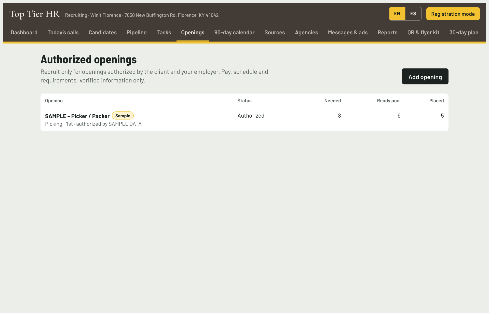
Necesarias, grupo listo y colocadas por vacante.
Add opening: título, puesto, turno, personas necesarias, estado, fechas.
Para marcarla Authorized la página exige quién la autorizó y cuándo.
Pago y horario: solo cuando estén verificados por escrito. Requisitos: solo los que dio el cliente.
Ready pool (grupo listo): preseleccionados o autorizados de esa vacante o de ese puesto, sin retención por otra agencia. En rojo si es bajo.
Al cubrirla, cambia el estado a Filled: la página calcula el tiempo de cobertura.
Capítulo 11
90-day calendar (calendario de 90 días)
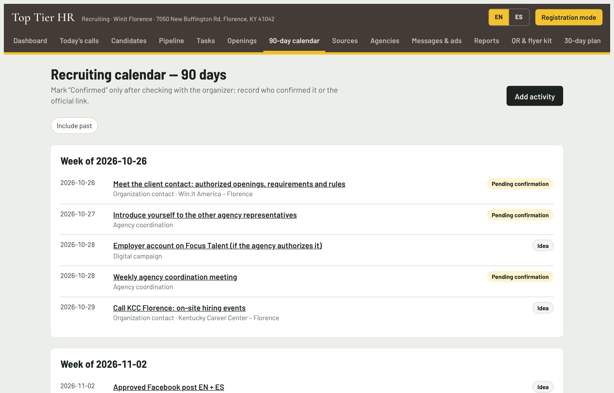
Actividades agrupadas por semana con su estado.
Load suggested 90-day plan carga 39 actividades: reuniones semanales entre agencias, contactos con KCC Florence, Esperanza Latino Center, Gateway, Brighton Center, Life Learning Center y la biblioteca, campañas digitales, jornadas de entrevistas (si se autorizan) y revisiones mensuales.
Solo marca Confirmed después de verificar con el organizador; la página exige registrar quién lo confirmó o el enlace oficial.
Después de cada actividad anota el costo real y los resultados: salen en los reportes.
Capítulo 12
Sources (fuentes)
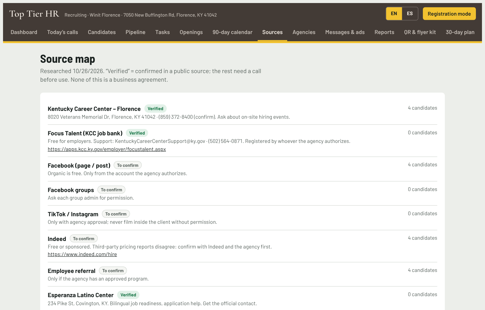
Mapa de fuentes investigado el 26/10/2026.
Verified = confirmada en una fuente pública. To confirm = llama antes de usarla. Nada de esto es un acuerdo comercial. A la derecha ves cuántos candidatos llegaron por cada fuente.
Lo que importa medirConserva los canales que traen personas que se presentan a trabajar, no los que traen más registros. La tabla del panel lo muestra por fuente.
Capítulo 13
Agencies (coordinación entre agencias)
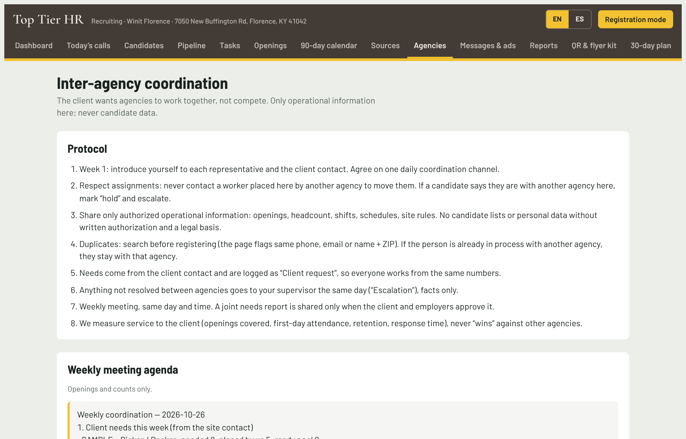
Protocolo, agenda semanal y registro de coordinación.
Protocol: las 8 reglas para trabajar con las otras agencias sin competir.
Weekly meeting agenda: se arma sola con tus vacantes y cantidades, sin nombres. Copy agenda para compartirla.
Coordination log: reuniones, solicitudes del cliente, escalamientos, traspasos y acuerdos. Solo información operativa.
Agencies at this client: nombre, representante, contacto laboral y qué cubre cada agencia.
NuncaContactes a un trabajador colocado por otra agencia para transferirlo, ni compartas listas de candidatos o datos personales con otras agencias sin autorización escrita y base legal.
Capítulo 14
Messages & ads (mensajes y anuncios)
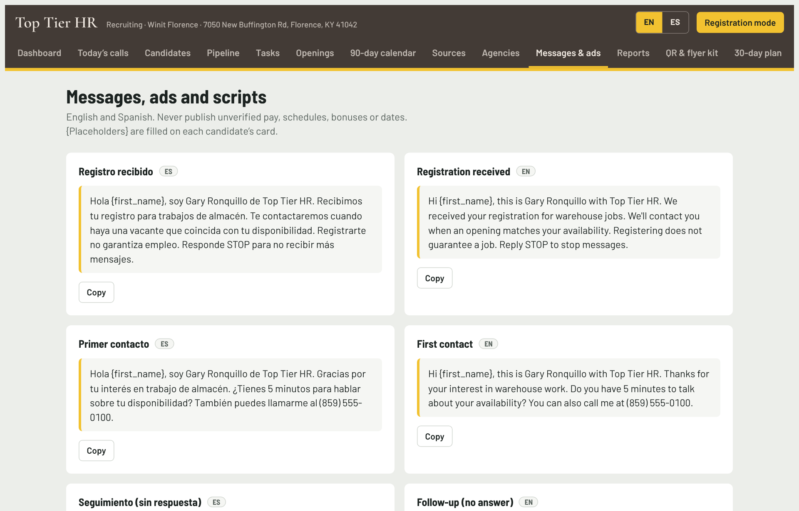
Cada plantilla en inglés y español, lista para copiar.
Incluye: confirmación de registro, primer contacto, seguimiento sin respuesta, solicitud oficial, recordatorio de cita, confirmar disponibilidad, primer día, seguimiento día 7, recontacto, información guardada, respuesta a comentarios, publicación de Facebook, guion de TikTok/Reels y anuncio largo para Indeed o Focus Talent.
Los marcadores como {first_name} o {apply_link} se completan con tus ajustes y con los datos de cada candidato. Los [CORCHETES] del anuncio largo se completan solo con información verificada; si no la tienes, borra la línea.
Capítulo 15
Reports (reportes PDF y Excel)
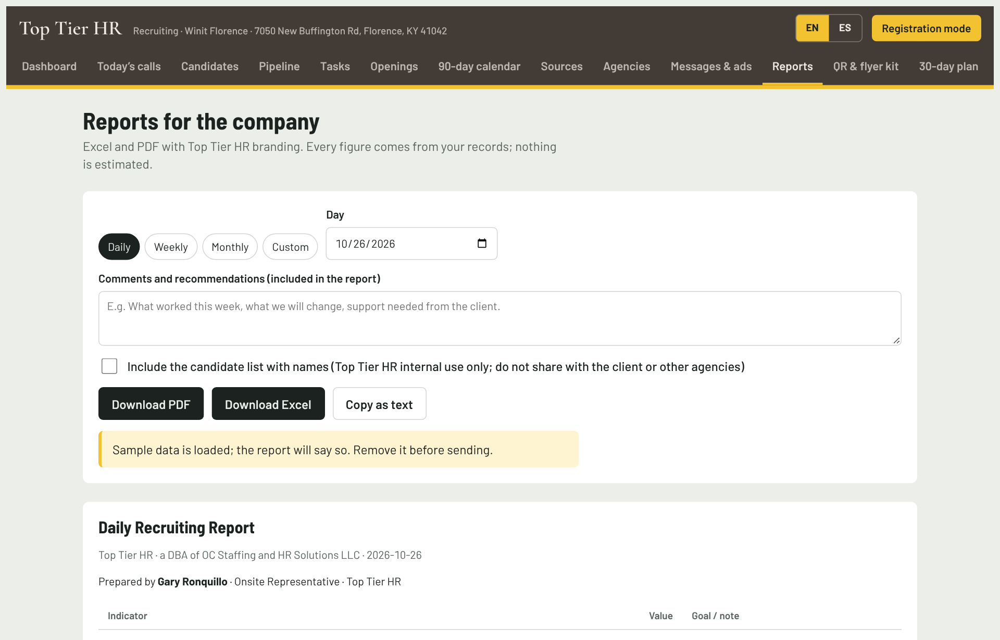
Elige el tipo de reporte, escribe tus comentarios y descarga.
Elige Daily, Weekly, Monthly o Custom (fechas que tú eliges).
Escribe en Comments and recommendations qué funcionó, qué cambiarás y qué apoyo necesitas del cliente. Aparece en el reporte.
Pulsa Download PDF o Download Excel. También puedes Copy as text para un correo o chat.
Formato
Contenido
PDF
Encabezado con la marca Top Tier HR y tu firma; cifras principales; resumen ejecutivo con metas; embudo con barras; fuentes y conversión; vacantes; pipeline; actividades y próximas actividades; coordinación entre agencias; tus comentarios; bloque “Prepared by Gary Ronquillo, Onsite Representative, Top Tier HR”.
Excel
Las mismas tablas en hojas separadas: Summary, Funnel, Sources, Openings, Pipeline, Activities, Agencies.
Datos personalesPor defecto los reportes llevan solo cantidades. La casilla “Include the candidate list with names” agrega nombres: úsala solo para uso interno de Top Tier HR, nunca para el cliente ni para otras agencias.
Capítulo 16
QR & flyer kit
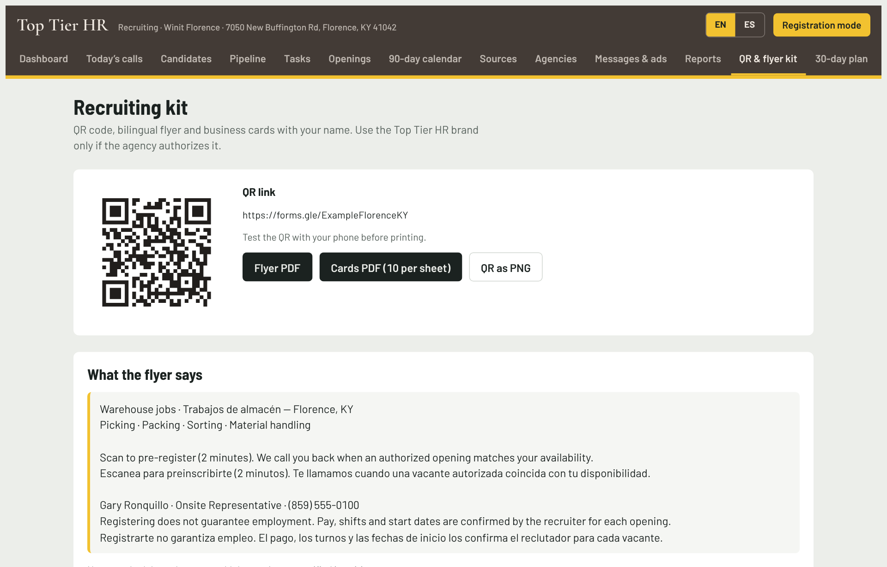
El QR se genera con el enlace de preinscripción de tus ajustes.
Flyer PDF: folleto bilingüe con la marca, el QR, tu nombre, cargo y teléfono, y el aviso “Registrarse no garantiza empleo”.
Cards PDF: 10 tarjetas de presentación por hoja carta, con QR.
QR as PNG: imagen del QR para Facebook, WhatsApp o una presentación.
Prueba el QR con tu teléfono antes de imprimir. Coloca folletos solo donde el cliente lo autorice, y usa la marca de Top Tier HR solo con aprobación de la agencia.
Capítulo 17
Registration mode (modo registro)
Pantalla para que los candidatos se registren solos en tu tableta o teléfono durante una feria, visita o jornada de entrevistas.
Pulsa Registration mode (botón amarillo, arriba a la derecha).
Elige la fuente de esos registros (por ejemplo, “Job fair”) y pulsa Start.
Entrega el dispositivo. El candidato elige EN o ES, llena el formulario y acepta el consentimiento (obligatorio).
Al enviar ve un mensaje de agradecimiento; el formulario se reinicia solo para la siguiente persona.
Para salir: Exit registration mode y confirmar.
La pantalla no muestra a nadie más ni ningún otro dato. Cada registro llega a tu base con su fuente y crea la tarea de primer contacto.
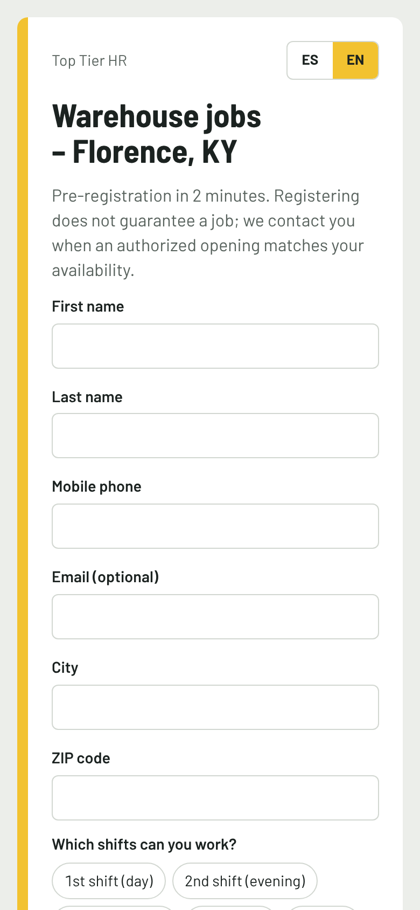
Modo registro en un teléfono.
Capítulo 18
30-day plan
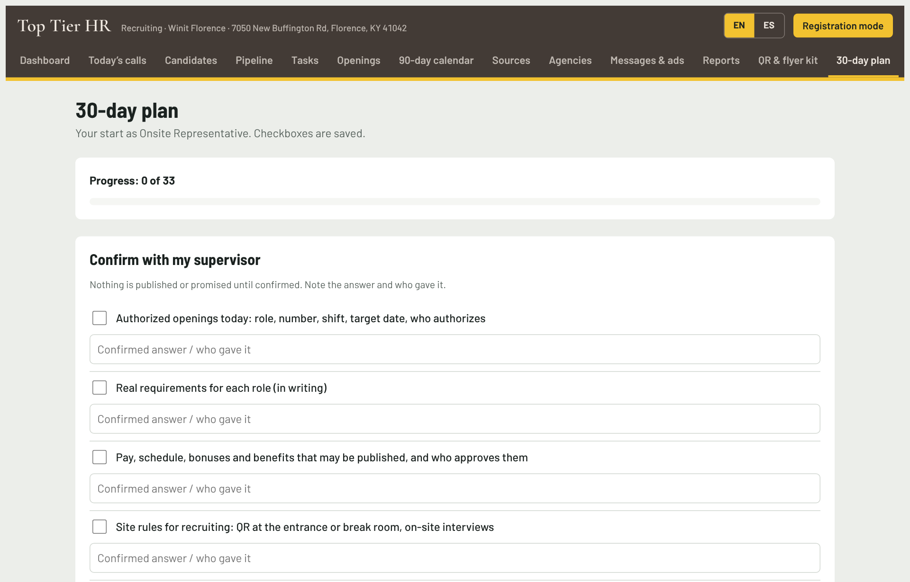
Preguntas para el supervisor y plan de 4 semanas, con avance.
Marca cada punto al completarlo; se guarda solo. En las 15 preguntas anota la respuesta confirmada y quién la dio (se guarda al salir del campo). La barra muestra tu avance total.
Capítulo 19
Settings & data (ajustes y datos)
Your details: empresa, tu nombre, teléfono de trabajo y enlace de preinscripción o solicitud oficial.
Activity goals: metas diarias y semanales, y alertas (días sin contacto, mínimo de candidatos por vacante).
Real monthly spend per source: solo gasto real, para calcular costo por candidato.
Import candidates (CSV): para respuestas de un Formulario de Google/Microsoft o una hoja de cálculo. Reconoce columnas de nombre, apellido, teléfono, correo, ciudad, código postal, idioma, turno y consentimiento. Omite filas incompletas o duplicadas y solo marca consentimiento si la columna lo dice.
Export candidates (CSV): copia de tu base.
Review inactive 12+ months: lista a quienes llevan más de un año sin actividad para eliminarlos según la política de la agencia.
Load / Remove sample data: datos de ejemplo para practicar.
Copia de seguridadUna vez al mes, exporta el CSV de candidatos y guárdalo donde la política de Top Tier HR lo permita.
Capítulo 20
Reglas de cumplimiento
Tema
Regla
Vacantes
Recluta solo para vacantes autorizadas por el cliente y Top Tier HR.
Información publicada
Nunca publiques pago, horarios, bonos, beneficios ni fechas no verificados. Di siempre que registrarse no garantiza empleo.
Consentimiento
Contacta solo a quien aceptó, y solo por los canales que aceptó. Respeta “STOP” o “NO” de inmediato: quita el consentimiento en la ficha.
Mensajes
Sin envíos masivos. En horario razonable. Desde el número o correo de trabajo autorizado.
Datos personales
Nada de SSN, identificación, banco, fecha de nacimiento, salud o estatus migratorio. Observaciones solo laborales.
No discriminación
Selecciona solo por requisitos reales del puesto. No uses edad, origen, idioma (salvo que el puesto lo exija), sexo, religión, discapacidad u otras características protegidas.
Otras agencias
Respeta sus asignaciones; comparte solo información operativa autorizada; escala los conflictos el mismo día.
Eliminación
Elimina enseguida a quien lo pida y revisa cada mes los registros inactivos.
Marca
Usa el nombre y logo de Top Tier HR en material para candidatos solo con autorización.
Capítulo 21
Preguntas frecuentes y solución de problemas
Problema
Solución
“Data can’t be saved in this view”
Abre la página en claude.ai con tu sesión iniciada. Fuera de claude.ai no se puede guardar.
“Could not save”
Revisa tu conexión y vuelve a pulsar guardar.
No descarga el PDF o el Excel
La primera descarga carga el generador desde internet: revisa tu conexión. Acepta la ventana de confirmación de descarga.
El kit no muestra el QR
Falta el enlace de preinscripción en Settings & data.
El mensaje dice “Fill in before sending: {my_phone}”
Escribe tu teléfono de trabajo en Settings & data.
Un candidato no aparece en la lista
Revisa los filtros; los cerrados se ocultan salvo con “Include closed”.
Un candidato no aparece en Today’s calls
No tiene consentimiento, está retenido por otra agencia o no tiene nada pendiente hoy.
Las cifras incluyen “Sample”
Quita los datos de ejemplo desde el Dashboard o Settings & data.
Quiero la página en español
Botón ES arriba a la derecha.
¿Mi supervisor puede ver mis candidatos si comparto la página?
No. Los candidatos y tus datos se guardan en tu espacio privado. Para informar, envía los reportes PDF o Excel.
Preparado por Gary Ronquillo · Onsite Representative · Top Tier HR